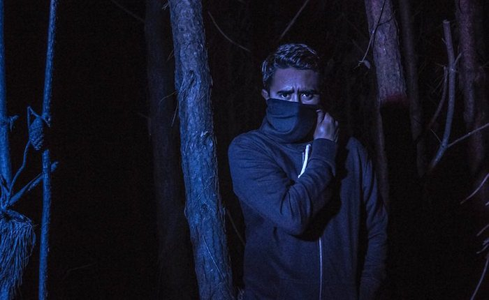

Flapo Fashions a Seductive Remix of Max Styler’s “Deep Dreams”


Steve Aoki’s reigning Dim Mak label might have celebrated its 20th anniversary last year, but it’s still got plenty in store for 2017. It’s just about to drop a hot collection of remixes for Max Styler’s acclaimed debut LP from last year, Heartache, which we described as an album that “puts Styler in a league of select artists who have both mass commercial appeal and significant underground clout.” We’ve got the remix of featured cut “Deep Dreams” to share before the whole package arrives.
Colombian producer Flapo is part of the crew of producers who’ve been recruited by Dim Mak, alongside Jameston Thieves and Awoltalk. His rework of “Deep Dreams” is a particularly deep, melodic and soulful affair that delivers on Dim Mak–style appeal, while at the same time keeping things surprisingly chill, placing KARRA’s vocals right at the front of the mix for a record that’s full of lush harmonies, feather-light drops, and seductive broken beats.
Available April 21 via Dim Mak.
Follow Flapo on Facebook | Twitter | SoundCloud
Follow Max Styler on Facebook | Twitter | SoundCloud
Follow Dim Mak on Facebook | Twitter | SoundCloud